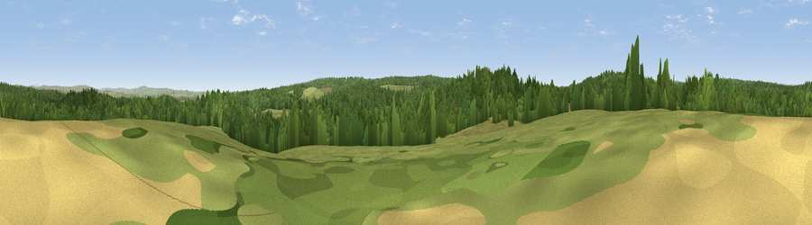

Viewpoint c11540_7560
#27233 in England · top 65% of its area beats it · — · open accessWhere it is
The exact computed spot (NY 78025 77025). Click the marker for map links.
Public access: this spot lies on mapped open-access land (CRoW Act 2000) — you may roam here on foot. Computed from Natural England's CRoW access layer and OpenStreetMap rights of way — not the legal definitive map. Always verify locally.
The view, rendered

A 360° render of this exact spot computed from the terrain model, tree cover and land cover — summer colours, afternoon light, calibrated against photographs of famous viewpoints. Real trees, hedges and buildings will differ in detail.
The panorama
Grey silhouette: terrain skyline in each direction (720 bearings, Earth curvature and refraction included). Dashed green: skyline with trees (+15 m) and buildings (+8 m) as obstacles. Blue strip: how far the ground is visible on each bearing.
Where the view opens
Wedge length = distance to the farthest visible ground on that bearing (vegetation-aware). Rings at 10, 25 and 50 km.
What fills the view
76% woodland · 24% grassland
Angular shares of the visible panorama (visual magnitude), not map area. Landscape diversity 0.25 (0–1 Shannon).
Key numbers
More beautiful places nearby
The staircase of upgrades: each row has a higher view potential than everything closer. Driving times are estimates from straight-line distance, calibrated against real road routing — check an actual route before setting out.
| Place | Direction | Drive | Score |
|---|---|---|---|
| Viewpoint c11508_7588 | SE · 2 km | ~6 min | 45.7 |
| Viewpoint near Wark | ESE · 3 km | ~8 min | 52.2 |
| Viewpoint c11472_7593 | SSE · 4 km | ~9 min | 60.0 |
| Viewpoint c11474_7604 | SE · 4 km | ~9 min | 60.4 |
| Viewpoint c11477_7613 | SE · 4 km | ~9 min | 68.2 |
| Viewpoint near Greenhaugh | N · 5 km | ~11 min | 71.2 |
| Viewpoint c11634_7288 | WNW · 14 km | ~26 min | 71.8 |
| Viewpoint near West Woodburn | ENE · 16 km | ~28 min | 73.4 |
55.08717, -2.34580 · source: screening · position refined by local search. Computed location — check access rights before visiting.